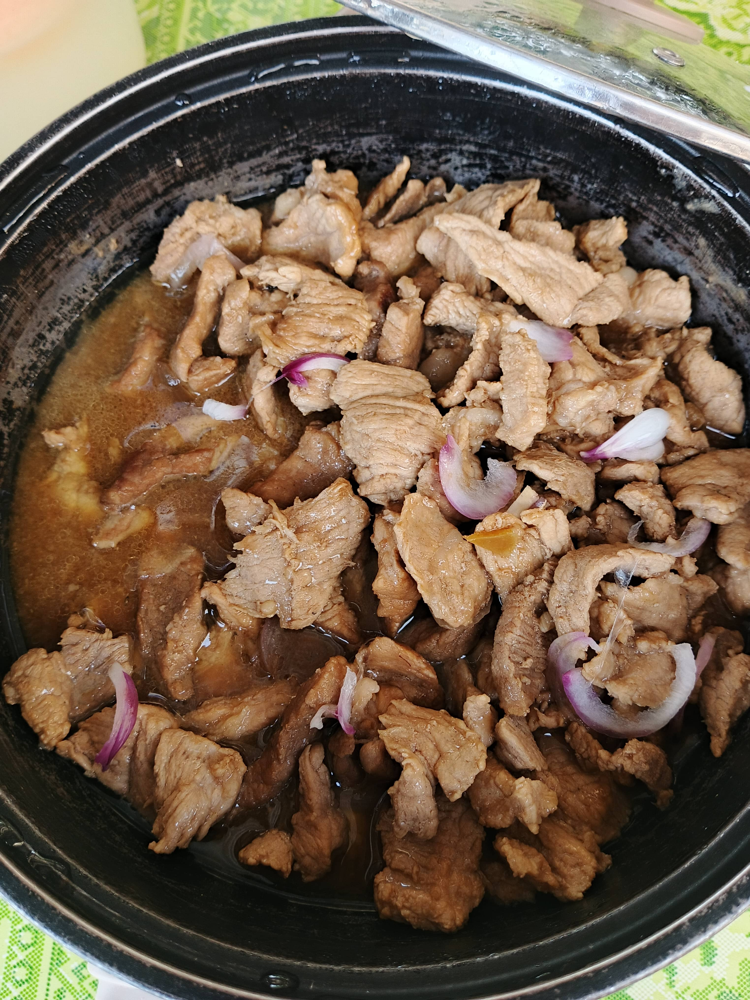
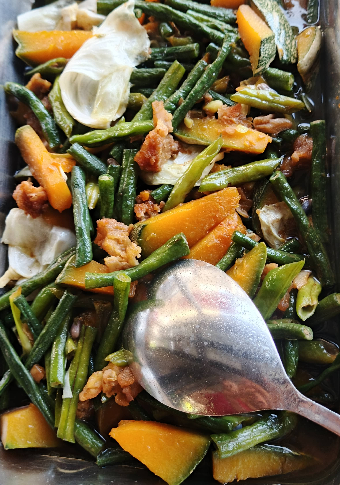

Featured Products

GINAMAY
Description:
Ginamay is a Filipino dish made of finely sliced pork simmered in a savory soy-based broth with onions, resulting in tender, flavorful meat perfect with rice.
Health Benefits:
Ginamay is a Filipino dish made of finely sliced pork simmered in a savory soy-based broth with onions, resulting in tender, flavorful meat perfect with rice.
Health Benefits:
- Good source of protein – helps build and repair muscles.
- Provides energy – pork contains nutrients like B vitamins.
- Contains iron and zinc – supports blood and immunity.
- Onions add antioxidants – good for heart health.

SQUID ADOBO
Description:
Squid Adobo is a Filipino dish made by simmering fresh squid in soy sauce, vinegar, garlic, onions, and peppercorns. Savory-tangy flavor, tender squid, rich sauce.
Health Benefits:
Squid Adobo is a Filipino dish made by simmering fresh squid in soy sauce, vinegar, garlic, onions, and peppercorns. Savory-tangy flavor, tender squid, rich sauce.
Health Benefits:
- High in protein – supports muscle growth.
- Low in calories – lighter than meat dishes.
- Rich in B vitamins – energy & brain support.
- Contains iron & selenium – boosts immunity.
- Omega-3 fatty acids – good for heart and brain.

PORKCHOP
Description:
Pork chop is a tender cut of pork grilled, fried, or baked. Juicy, flavorful meat with slightly crispy exterior.
Health Benefits:
Pork chop is a tender cut of pork grilled, fried, or baked. Juicy, flavorful meat with slightly crispy exterior.
Health Benefits:
- Rich in protein – builds & repairs muscles.
- Contains B vitamins – supports energy & brain function.
- Iron and zinc – boosts immunity.
- Healthy fats – long-lasting energy.

PORK HUMBA
Description:
Pork Humba – Slow-cooked, tender pork belly simmered in a rich, sweet, and savory sauce made with soy sauce, garlic, vinegar, and brown sugar, infused with traditional Filipino flavors.
Health Benefits:
Pork Humba – Slow-cooked, tender pork belly simmered in a rich, sweet, and savory sauce made with soy sauce, garlic, vinegar, and brown sugar, infused with traditional Filipino flavors.
Health Benefits:
- Good source of protein – Pork provides essential amino acids needed for muscle repair and growth.
- Rich in iron and zinc – Important for energy production, immune function, and overall health.
- Contains B vitamins – Especially B1 (thiamine), B6, and B12, which support metabolism and brain function.
- Collagen from slow-cooked pork – May support joint and skin health.
- Garlic benefits – Garlic used in Humba has antioxidant and immune-boosting properties.

PINAKBET
Description:
A traditional Filipino vegetable medley featuring bitter melon, eggplant, squash, okra, and string beans, sautéed in savory shrimp paste for a rich and authentic flavor.
Health Benefits:
A traditional Filipino vegetable medley featuring bitter melon, eggplant, squash, okra, and string beans, sautéed in savory shrimp paste for a rich and authentic flavor.
Health Benefits:
- Rich in vitamins and minerals – Contains vitamin A, C, and potassium from vegetables, which support immunity, vision, and heart health.
- High in fiber – Helps digestion, promotes gut health, and supports weight management.
- Low in calories – Makes it a healthy, filling dish for a balanced diet.
- Antioxidant properties – Vegetables like bitter melon and squash contain antioxidants that protect cells from damage.
- Supports heart health – Fiber and nutrient-rich vegetables may help lower cholesterol and blood pressure.